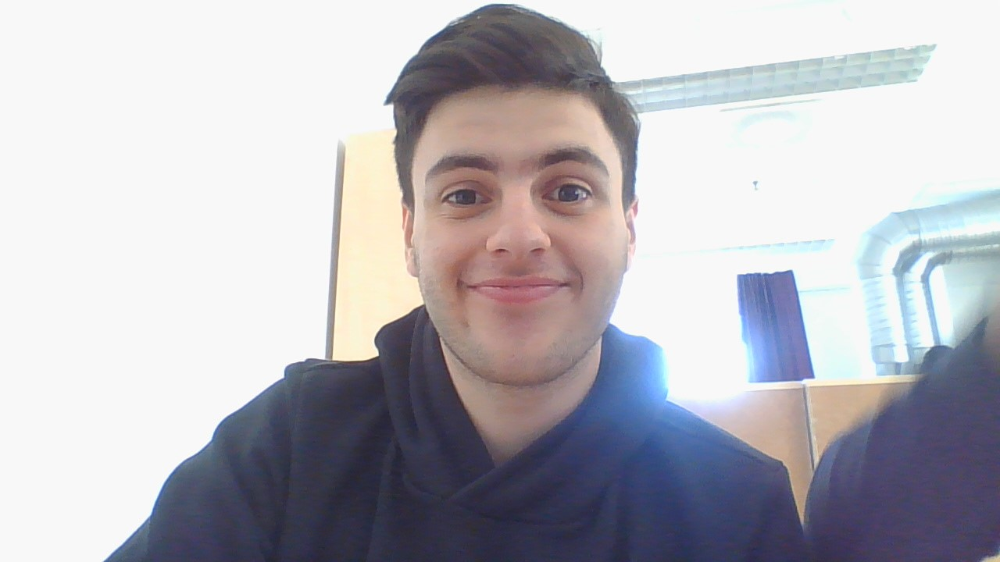

Om mig - Millad
Jag är bäst

Bakgrund
Jag heter Millad och jag är född i Baghdad i centrala Irak. Jag heter Millad och jag är född i Baghdad i centrala Irak.
Efter några månader efter att jag föddes så var v tvungna att lämna landet på grund av krig. Vi åkte först till Tyskland för att operera mig
Mitt liv hängde på operetationen så om jag inte skulle göra det så skulle min njure att förstöras och då dör jag.
Så jag gjorde operationen och den var framgångsrik.
Mina 5 favoritspel
RECEPT